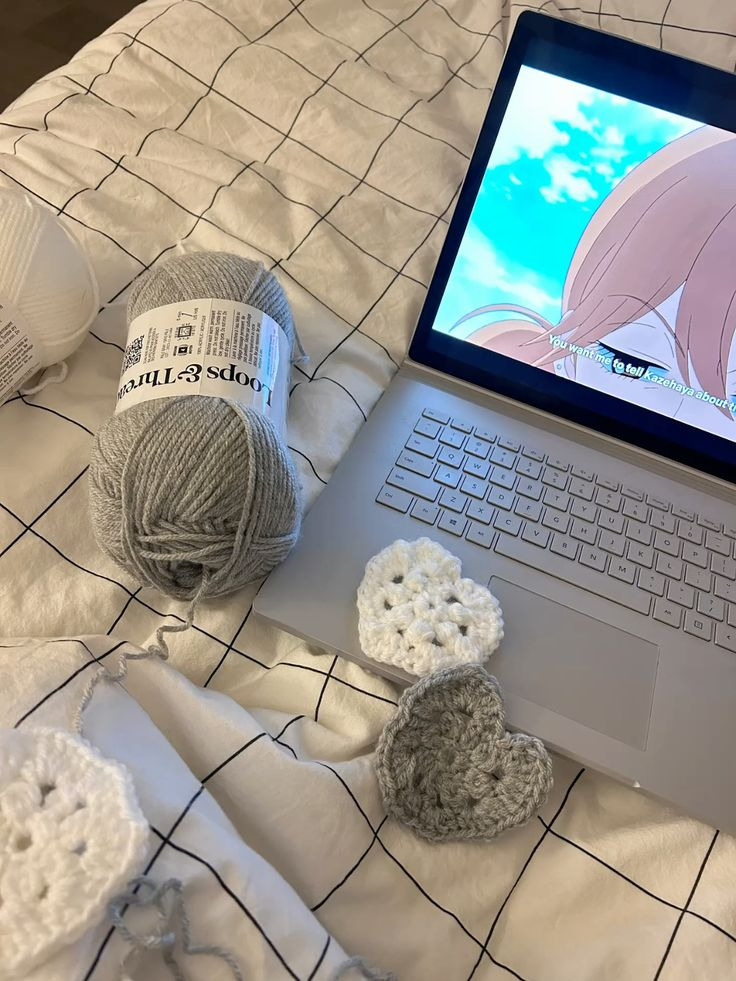
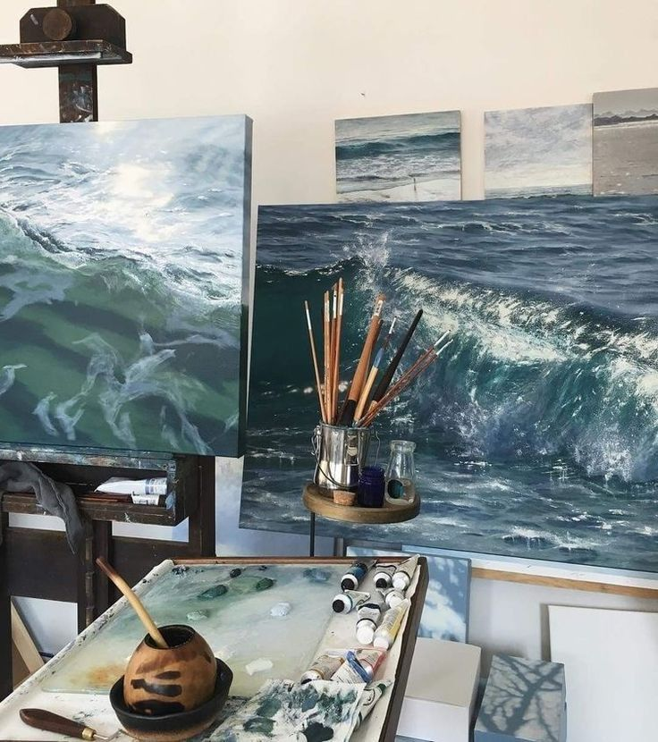
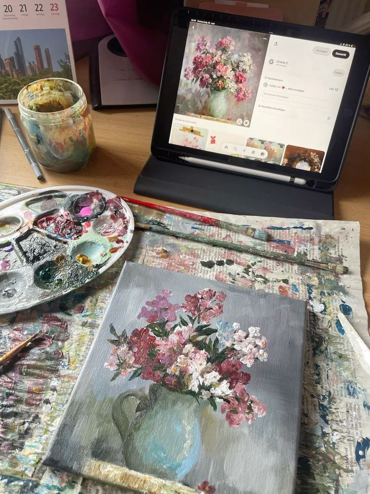
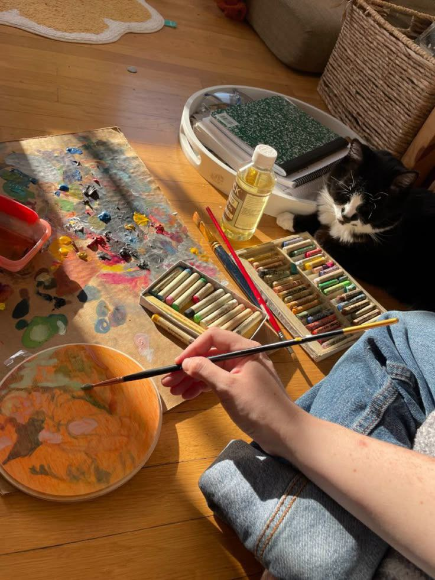
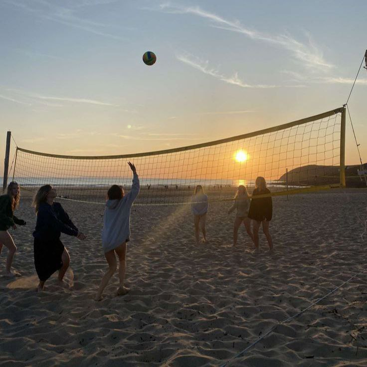
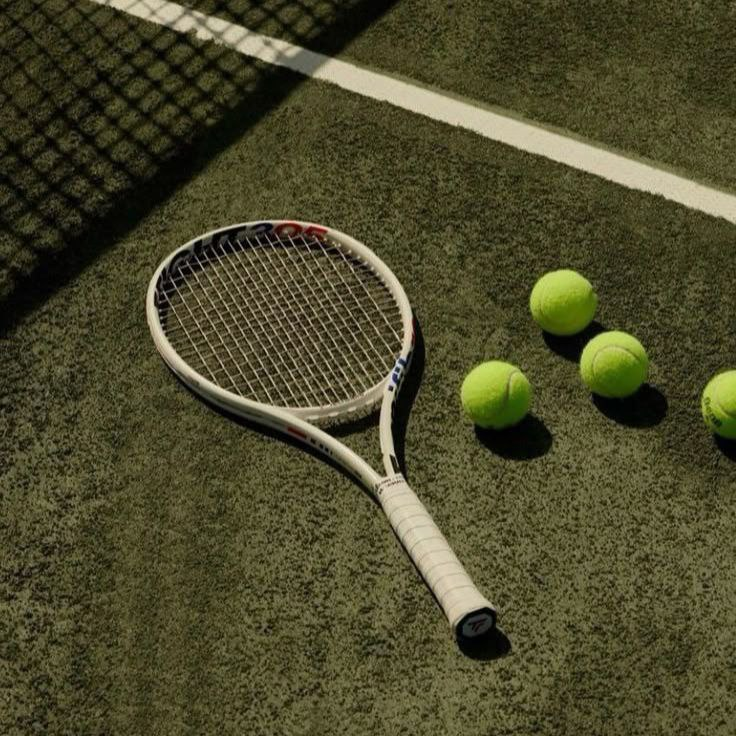

Productively spending your free time means spending your free time doing something fun, good for your health,good for the environment or just simply doing what simulates the joy in you and spending your free time with friends and family.
Hobby is a something that you loved to do since you were a child,hobby is something that makes you happy and hobby is something that comforts you when life gets hard like during an exam or some difficulities. Hobby can be anything. It can be writing, listening to music or simply playing sports.



Chocheting is a type of activity where you get a yarn and a needle and than you use the needle to make patterns with the yarn. This is a good hobby that you should try because it's relaxing. To be honest it's my hobby too. Since you can crochet clothings, plushies and even bags. Than's what makes it fun. So I suggest that one.
  
Painting is a type activity where you express your feelings and draw it. This is a good hobby since it calms you down and make you feel like time is going fast. And it makes you feel happy after drawing something that expresses your feelings which is really good for your mental health. It is also good for your creative skills.
 
Sport is a physical activity or game, often competitive and organized, that maintains or improves physical ability and skills.Sport may provide enjoyment to participants and entertainment to you. The number of participants in a particular sport can be from hundreds of people to a single individual.
Spending your free time with these kind of hobby can help you more than scrolling for hours or playing games for hours since it's good for your health, your eyes' health and they're very relaxing. While scrolling and playing games are really bad for your eyes and for your nearvous system.If you don't know how to paint or crochet, you can watch Youtube tutorials and if you don't know how to play any sports you can join any classes near you. Doing these hobby during you free time really help you have fun while you can with friends, family or even alone.
By Yoon Yati Nwel EDUSN Year 7